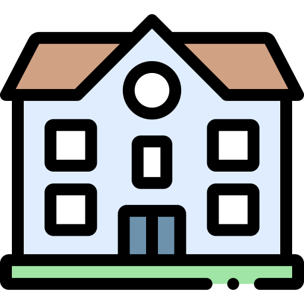

education
2023 - Aujourd'hui
Cycle ingénieur informatique
 Esprit
Esprit
Tunis, Tunisie
Le programme d'étude par apprentissage par projet a été conçu pour favoriser une compréhension holistique des concepts théoriques tout en développant des compétences pratiques essentielles à la réussite dans le domaine de l'ingénierie
2010 - 2013
Licence Fondamentale en mathématiques
Faculté de sciences de Sfax
Sfax, Tunisie
Au cours de ma licence en mathématiques, j'ai développé une expertise approfondie dans le domaine, acquérant une solide compréhension des concepts fondamentaux. Ma formation a couvert des domaines tels que l'analyse, l'algèbre, la géométrie, et la statistique. Mon engagement académique s'est reflété dans des résultats excellents, démontrant ma capacité à assimiler des connaissances complexes.
2007 - 2010
Baccalauréat mathématique
 Lycée sencondaire 02/03/1934
Sidi Bouzid, Tunise
Au cours de mes études secondaires, j'ai obtenu un baccalauréat en mathématiques, une formation qui a jeté les bases solides de ma compréhension des concepts mathématiques fondamentaux.